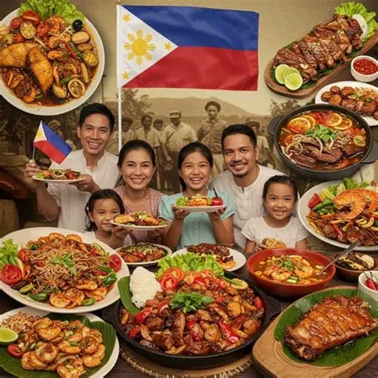

RYNRIO Presents
Welcome to RYNRIO Presents, a place where food and storytelling come together. Inspired by the experience of reading stories on platforms like Wattpad, RYNRIO offers readers a collection of food-inspired stories that bring imagination, creativity, and the love of food to every page.
From the comforting taste of traditional Filipino dishes to the irresistible flavors of street food and homemade meals, every story introduces readers to a world inspired by food. Each dish has its own character, each flavor holds a memory, and every meal can become the beginning of an unforgettable adventure.
RYNRIO is more than just a collection of food names and descriptions. It is a reading platform where readers can explore different stories, discover interesting characters, experience unexpected twists, and enjoy narratives inspired by the foods we know and love.
Whether you enjoy heartwarming stories about family recipes, exciting adventures inspired by Filipino street food, funny moments around the dining table, or imaginative tales built around your favorite dishes, RYNRIO has something for you to discover.
Our goal is to make reading enjoyable, accessible, and entertaining while celebrating the richness of food and culture. Through every story, we hope to inspire curiosity, bring back familiar memories, and help readers appreciate the stories and experiences connected to the food they eat.
So, find a story that catches your interest, explore a dish you have always loved, and discover something new with every read. At RYNRIO Presents, every food has a story, and every story has a flavor worth remembering.
RYNRIO Presents — Every Dish Has a Story.